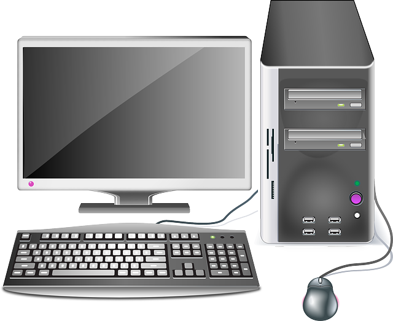

<--ZPĚT
Stolní počítač
Stolní počítače jsou počítače, které nelze jen tak přenášet z místa na místo ve stavu plné funkčnosti. Stolní počítač se skládá z hlavní jednotky - samotného počítače; monitoru; myši; klávesnice; (Sluchátek nebo) reproduktorů.
Používají se v kancelářích, ke hraní her, v domácnostech a tak dále. Počítače mají OS - Windows, Linux, macOS.
